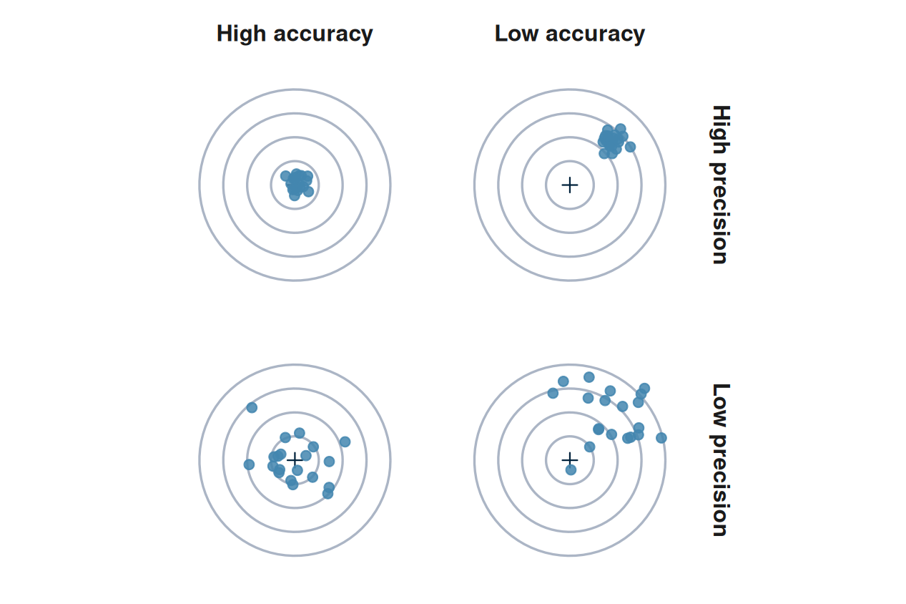

Estimation, precision, and sample size
Week 8
Fred Ho
What you have learnt so far
- Stats, Week 7.
sedwas described with a mean of 6.56 and an SD of 10.9 hours/day from 34,434 people, then the median (5 hours/day) and the IQR (3 to 8 hours/day). - Epi.
- Weeks 1 and 5. External validity and selection bias. This week adds another source of problem: sampling variation, precision instead of bias and validity
- Week 2. Risk, odds, RR and OR calculated as point estimates. This week calculates also the confidence as well as that for a difference in proportions
- Week 3. Underpower was discussed. This week does the sample size arithmetic behind it, and Week 9 returns to define power itself
By the end of this session, you will be able to
- Understand the difference between population and sample, and why statistical inference focuses on the population
- Explain why a sample estimate varies from sample to sample, and state the practical consequence of the central limit theorem for the shape of that variation
- Distinguish the standard deviation from the standard error, and calculate the standard error of a mean and of a proportion
- Construct a 95% confidence interval for a mean, a proportion, a difference in means, and a difference in proportions
- Interpret a confidence interval correctly, and identify the common misinterpretation
- Explain how sample size and variability jointly determine an estimate’s precision, and calculate the sample size a target margin of error requires
Block 1: estimation and the confidence interval
A different 34,434 people
- Last week’s mean sedentary time, 6.56 hours/day, came from one sample
- A different 34,434 people would have given a different number
- How different, and does it matter?
- An estimate is only useful when we know how accurate and how precise it is
- In common public health applications:
- Accuracy is mainly an epidemiological question
- Precision is what we try to quantify here in statistics
Population and sample
- The population is what we want to measure (e.g., UK general population, type 2 diabetes patients)
- The sample is what we can measure, usually a subset of the target population
- We must compute statistics from the sample
- But what we want to say is about the population
The parameter and the estimate
- The estimand: the fixed, unknown population value the question is about
- The estimator: the method that produces a number from a sample
- It is a random variable, because who ends up in the sample is random
- The estimate: one particular result the estimator produced
- It is ‘realised’ (i.e., occurred), so it is fixed
- Abstract, but it is the foundation for how we define precision
- Black line: the fixed, unknown population mean
- Each row is one sample: circles are its observations, the bar its mean, the estimate
- Estimates scatter around the population mean; none lands on it exactly
Random sampling, and what can go wrong
- Random sampling ensures we can generalise findings from the sample to the population
- Problems can arise from:
- Who was reachable (incomplete sampling frame)
- Who agreed (healthy volunteer bias)
- Who was excluded (sampling frame / missing data bias)
Bias and variance
- Bias. How accurate on average the estimator is, also called validity
- Week 5’s selection bias is an example
- Variance. How precise the estimator is, also called precision
- The general statistical term for how much it scatters from sample to sample
- A confidence interval addresses this, and does nothing about bias
- A confidence interval states its precision but not the accuracy
- A tight CI can still be biased

- Accuracy reads across, precision reads down
- The black cross is the true value; each blue dot is one estimate
The sampling distribution
- We report a confidence interval to state precision
- The interval is built from the standard error
- The standard error is the estimated spread of the estimator
- That spread is a property of the estimator’s own distribution
- Imagine applying the same estimator to different random samples repeatedly
- The results of these samples will have a distribution
- Sampling distribution: each sample yields one estimate, a single fixed draw from it
- Everything from here to the confidence interval rests on this distribution
Seeing it happen
- Three coins, fair (p = 0.5), biased (p = 0.25) and very biased (p = 0.1), and five sample sizes: n = 1, 5, 10, 30, 100
- Buttons repeat 1, 5, 20, 100 or 1000 samples, so the shape of the sample mean builds live
- Head = 1; tail = 0
- The mean of the samples is the proportion of heads
What the demonstration shows
- The fair coin’s data distribution is symmetric
- At n = 1 it is two equal spikes, at 0 and at 1
- The biased coin’s data distribution is skewed
- At n = 1, three in four flips land at 0
- Move up through n = 1, 5, 10, 30, 100, for either coin
- The sample mean’s own distribution drifts toward a bell shape
- The data does not have to be normal. Skewed data still end up with a bell-shaped sampling distribution, only with a larger n needed to get there than a symmetric parent needs
- The skewed case that matters for this course is
sed, right-skewed, in Chapter 4, which refers back to what this seminar showed
The central limit theorem
- The distribution of the sample mean approaches a normal distribution as n grows
- It applies no matter the shape of the underlying data
- If the data is highly skewed, a larger sample is needed for the sample mean to follow a normal distribution approximately
- Textbooks often suggest rules of thumb, e.g., n ≥ 30, for the CLT to hold
- Reality is more complicated
- For data that follows a symmetric distribution (a fair coin), n = 10 or 20 is fairly close to normal already
- For highly skewed data (a very biased coin), n = 100 is not necessarily enough
Standard deviation and standard error
- Recall: any normal distribution is fully described by two numbers, its mean and its SD
- The sampling distribution is a normal distribution too
- Its centre is the sample mean
- Its spread is the standard error (SE)
- The SD describes the data; the SE describes the estimator
- To quantify the precision, we need the SE
\[SE = \frac{SD}{\sqrt{n}}\]
- The SE inherits the SD, but shrinks with the square root of n
Try it: SD or SE?
- Sedentary time: mean 6.56 hours/day, SD 10.9 hours/day, SE 0.06 hours/day (n = 34,434)
- Which number says how much individual people’s sedentary time differs from person to person?
- A. The SD, 10.9 hours/day
- B. The SE, 0.06 hours/day
- Discuss in pairs: what does the other number tell us instead?
Sedentary time: the standard error of its mean
| Quantity | Mean | SD | N | SE |
|---|---|---|---|---|
| Sedentary time, hours/day | 6.56 | 10.9 | 34,434 | 0.0588 |
- The SE, 0.059 hours/day, is far smaller than the SD of the data, 10.9 hours/day
- The estimate is precise because the sample size is so large
What a confidence interval is, and why we report one
- An estimate on its own says nothing about how far off it might be
- Everything above, the sampling distribution and the SE, exists to build a confidence interval (CI)
- A CI attaches precision to the sampling process
- Always reported as a range
- Built from the standard error
- Its width is the margin of error
- In its simplest form, a 95% CI is calculated as:
- estimate ± 1.96 * standard errors
Why 95% and 1.96, and when t replaces it
- CIs are mostly reported as ‘95% CI’
- 95% confidence level, or equivalently 5% (1-0.95) significance level
- The confidence/significance level is almost always fixed at this arbitrary level
- 1.96 comes from the normal distribution the CLT delivers
- With a small sample, we are less certain about our SD estimate
- The t distribution allows for that extra uncertainty
- Same bell shape, heavier tails
- Bigger than 1.96, growing as n shrinks
- At n = 10 it is about 2.26. At n = 30, about 2.05
- As n grows, t converges back to the normal and 1.96

A 95% CI for sedentary time
| Quantity | Mean | SD | N | SE |
|---|---|---|---|---|
| Sedentary time, hours/day | 6.56 | 10.9 | 34,434 | 0.0588 |
- 6.56 ± 1.96 × 0.0588
- 6.56 ± 0.12
- 6.45 to 6.68 hours/day
Try it: a CI from scratch
| Quantity | Mean | SD | N |
|---|---|---|---|
| Age, years | 47.5 | 18.5 | 41,765 |
- Given the mean, SD and n above, find the standard error, then the 95% CI
- Three lines, five minutes
Try it: the answer
- SE = 18.5 / sqrt(41,765) = 0.091 years
- CI: 47.5 ± 1.96 × 0.091
- 47.3 to 47.7 years
A range of compatibility
- A CI is not a single verdict about one number
- Any value inside a CI is compatible with the data
- 6.45 to 6.68 hours/day says a population mean of 6.5 is compatible with what we saw, and so is 6.6. A mean of 7.2 is not
- Compatibility is a matter of degree: values near the middle sit better than values near the ends
- This is what makes a CI more informative than any test that only presents a p-value, which Week 9 covers
What a 95% confidence interval means
- 95% CI definition: Of all the CIs this estimator could build, 95% of them would contain the true population value
- The population value is fixed. It is the CI that moves from sample to sample
- This is counterintuitive, and it is why the result gets misinterpreted so often
- It comes from what is called frequentist statistics, which is easier to compute
- An alternative, credible intervals from Bayesian statistics, are more intuitive to interpret but harder to compute
- We won’t be learning this in the MPH
Seeing coverage
- Below is a simulator for 95% CIs on
sed- Excludes 145 physically impossible values (over 24 hours/day), so the true mean here is 5.89 hours/day, not the 6.56 used elsewhere in this deck
- Each click draws 1,000 95% CIs against the true mean (navy line)
Try it: is this interpretation sound?
- The sedentary time CI: 6.45 to 6.68 hours/day
- A. ‘There is a 95% probability the true mean lies in this range’
- B. ‘We are 95% confident the true mean lies in this range’
- C. ‘If we repeated this study many times, 95% of the resulting CIs would contain the true mean’
- Which are wrong, and what exactly is wrong with each?
Try it: the answer
- A. Wrong: both the 95% CI and the true mean are fixed
- B. Wrong: despite sounding careful, ‘confident’ is standing in for ‘probability’, the same error as A
- C. Right: the coverage statement about the procedure across repeated samples, not about this one CI; doesn’t assume the true mean or the CI to be random
A common misconception
- The intuitive objection behind A and B: if 95% of all such CIs cover the true value, surely this one has a 95% chance of covering it too?
- It does not. The population mean is fixed, and this one CI either contains it or does not
- Once both are fixed, there is no probability left in the situation
- The correct interpretation (Answer C) is awkward to say
- So the practical way to avoid the confusion is to write the result and let it stand, with no probability sentence attached
- 6.56 hours/day (95% CI: 6.45 to 6.68)
This week’s methodological anchor
- Greenland et al. (2016), European Journal of Epidemiology: ‘Statistical tests, P values, confidence intervals, and power: a guide to misinterpretations’
- Names the specific wrong readings, not just the general warning
- PubMed
- Judging whether a sentence says what the numbers support is where half the assessment marks are
‘Misinterpretation and abuse of statistical tests, confidence intervals, and statistical power have been decried for decades, yet remain rampant.’
‘We then provide an explanatory list of 25 misinterpretations of P values, confidence intervals, and power.’
A proportion is a mean too
- Everything above focused on continuous data; we also work with a lot of binary data in public health, e.g., whether someone died
- Binary data are often summarised as a proportion
- A proportion is a sample mean
- Code the outcome 1 for everyone who has it, 0 for everyone who does not
- The proportion with the outcome is exactly the mean of that column of 0s and 1s
- Example: 3 of 5 patients improved, so the column is 1, 1, 1, 0, 0
- Its mean is 0.6, which is also the proportion: 60% (3/5)
- The CLT applies to proportions for the same reason it applies to any other mean
- We already saw its sampling distribution build live: coin flips coded 0 and 1 are the same thing (back to the demonstration)
The standard error of a proportion
- Because a proportion is also a mean, the CLT applies to it too
- First we need its SE
\[SE = \sqrt{\frac{p(1-p)}{n}}\]
- The same SD-over-root-n shape as the formula for a mean, with sqrt(p(1-p)) playing the part of the SD
- For a binary variable, the spread is fixed by the proportion itself
- The formal name of the distribution of a binary variable is binomial distribution
- Like the normal distribution, the binomial distribution is also characterised by two numbers only:
- The number of observations (i.e., sample size, n)
- The proportion with the event (p)
An example of a proportion and its standard error
| Quantity | Proportion improved | N | SE |
|---|---|---|---|
| Improved, streptomycin trial | 0.514 | 107 | 0.0483 |
- The 1948 MRC streptomycin trial: 55 of 107 patients improved
A 95% CI for a proportion
| Quantity | Proportion | N | SE |
|---|---|---|---|
| Improved, streptomycin trial | 0.514 | 107 | 0.0483 |
- 0.514 ± 1.96 × 0.0483
- 0.419 to 0.609
- Everything above about compatibility and interpretation applies here too
Block 2: comparing two groups
One mean is rarely the question
- We can put a CI around one mean, the basis of a descriptive study
- Analytic studies make comparisons: men against women, treated against untreated
- In these cases, we are interested in the differences and ratios between these means
A CI for a difference in means
- The estimate is the difference between two groups’ means
- The standard error combines the two groups’ own
- This works because:
- Each group’s mean follows an approximately normal sampling distribution, based on CLT
- The difference between two normal quantities is itself normal (proven mathematically)
- Since the difference is approximately normal, it takes the same estimate ± 1.96 SE calculation as before
- Hand-calculating the CI of a difference or a ratio is outside the scope of the MPH, and rests on more complex formulae
- We will learn how to do it in R, and how to interpret the result
Does cholesterol differ between women and men?
| Quantity | Estimate | 95% CI | p |
|---|---|---|---|
| Cholesterol, women minus men, mmol/L | 0.169 | 0.147 to 0.19 | < 0.001 |
- Check the direction before reading the CI: the software’s own output names which group was subtracted from which
A CI for a difference in proportions
- Same argument as the difference in means, with one qualification
- For a proportion the normal shape is an approximation
- The approximation won’t be as good as when the underlying data is continuous
- Good enough when both groups have a reasonable number of events and non-events
- Exact methods exist for when either count is small (more in the labs)
Streptomycin: 69% against 33% improved
| Quantity | Estimate | 95% CI |
|---|---|---|
| Improved, streptomycin minus control | 0.364 | 0.169 to 0.559 |
- The same trial we met in Week 7
The CI and the null value
- This CI excludes zero
- Zero is not among the values these data are compatible with
- People often read this as a ‘real’ difference, and Week 9 will introduce this more formally
Try it: a CI for a difference in proportions
| Quantity | Difference | SE |
|---|---|---|
| Current smoking, men minus women | 0.076 | 0.004 |
- Given the difference and its SE above, find the 95% CI
Try it: the answer
- CI: 0.076 ± 1.96 × 0.004
- 0.068 to 0.084
- The CI excludes zero, between men and women in current smoking
Block 3: how big a study needs to be
Before any comparison runs
- Every comparison in Block 2 assumed the data were already collected
- In practice, someone decides how many people to recruit before a single measurement is taken
- How large does a study need to be, and what decides the answer?
What determines the margin of error?
- In polling, people sample based on their desired margin of error
- The same for descriptive epidemiological studies
- Three things decide a margin of error (i.e., CI’s width)
- How much confidence is required (‘95%’)
- How variable the data are (SD)
- How many observations there are (n)
- 1 is usually fixed; 2 is based on the measurement; 3 is often what people try to determine
Width and the square root of n

- The CI width shrinks with one over the square root of n: steeply at first, then flattening
- Cut the sample in half, the CI gets about 40% wider. Cut it to a tenth, roughly three times wider
From precision to sample size
- Three linked quantities
- The wanted margin of error
- The expected data spread (i.e., how noisy the measurement is)
- The sample size
- Fix the first two, and the formula gives the third
\[n = \frac{1.96^2 \times p(1-p)}{m^2}\]
- m is the wanted margin of error, half the CI’s width
- p is the expected proportion, playing the same role the SD plays for a mean
- m is squared, so it dominates: halve the margin, and n roughly quadruples
Try it: how does n respond?
- A poll wants to estimate a proportion around p = 0.5, with a 95% CI
- At a margin of error of 3 percentage points (m = 0.03), the formula above gives n ≈ 1,067
- Tightening the margin to 1.5 percentage points (m = 0.015) multiplies n by about how much?
- A. 2x
- B. 4x
- C. 10x
- Two minutes
Try it: the answer
- B. About 4x
- Halving m halves the bottom of a squared term, so the whole fraction roughly quadruples: n ≈ 4,268
- The same square-root relationship as the width curve, read the other way round
Application
Three claims, three CIs
- Each result below is real: the paper’s own reported statistic, and its own conclusion, quoted exactly, with a link to the paper
- In pairs: does each sentence say what the CI supports? Where it does not, what would you write instead? Ten minutes
| Study | Result | Paper's conclusion | Link |
|---|---|---|---|
| Cao et al. (2020), NEJM | 28-day mortality 19.2% vs 25.0%, difference -5.8pp (95% CI -17.3 to 5.7) | '...no benefit was observed with lopinavir-ritonavir treatment beyond standard care.' | PubMed |
| Radonovich et al. (2019), JAMA | Influenza 8.2% vs 7.2% of person-seasons, difference 1.0pp (95% CI -0.5 to 2.5), p = 0.18 | '...resulted in no significant difference in the incidence of laboratory-confirmed influenza.' | PubMed |
| Williamson et al. (2020), Nature | HR 1.48 (1.29 to 1.69) Black; 1.45 (1.32 to 1.58) South Asian, vs white | 'Black and South Asian people were at higher risk, even after adjustment for other factors.' | PubMed |
- A hazard ratio (Williamson) is a ratio measure like the RR and OR from Week 2, with a null value of 1. Week 9 formalises it
Three claims, judged
- Cao et al.: too imprecise to support ‘no benefit’
- The CI runs from a 17-point reduction in mortality to a 6-point increase, compatible with both a large benefit and real harm
- The trial’s own next sentence half-admits this
- Radonovich et al.: precise, but the sentence is potentially misleading
- The narrow CI already shows any difference either way is small. ‘No significant difference’ throws that away
- Cao’s imprecision and this one point in opposite directions: one CI is too wide to conclude ‘no difference’, the other narrow enough to conclude it
- Source: Hemming and Taljaard, Medical Journal of Australia 2021
- Williamson et al.: sound
- The CI is well away from 1, and the claim matches it, correctly hedged
- The honest question is what the estimate was adjusted for, not whether the arithmetic is right
Key points, and what the lab does
- An estimate from a sample is not the population value. The CI says how far off it might be
- The SD describes the data. The SE describes the estimator
- A 95% CI is the range of values the data are compatible with, and it covers the population value 95% of the time in the long run: not the same as being 95% sure about this one
- Precision is bought with n, but scaled slowly
- The lab builds every one of these CIs in R, on
nhanes_mphandstrep_tb, and reconciles the hand calculations from today against the software’s answers